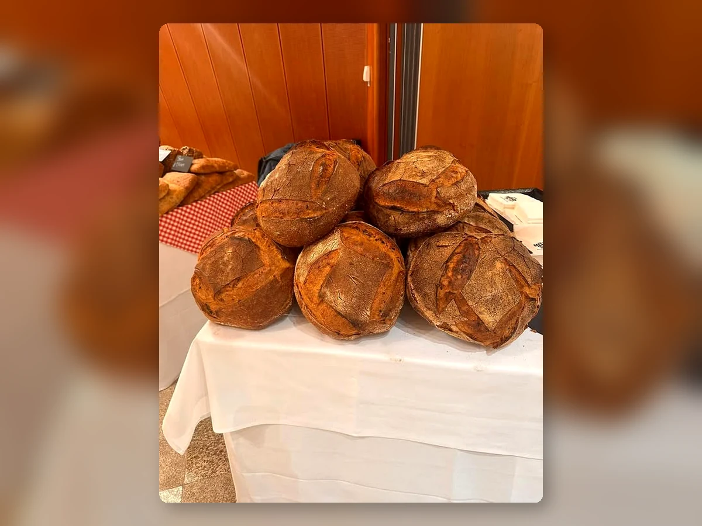
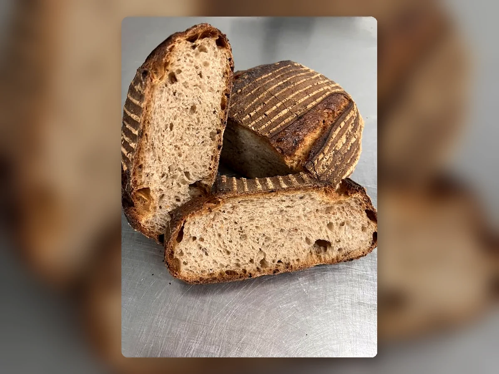
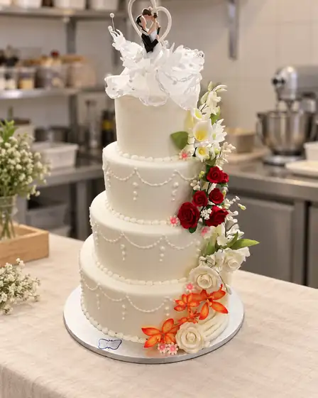
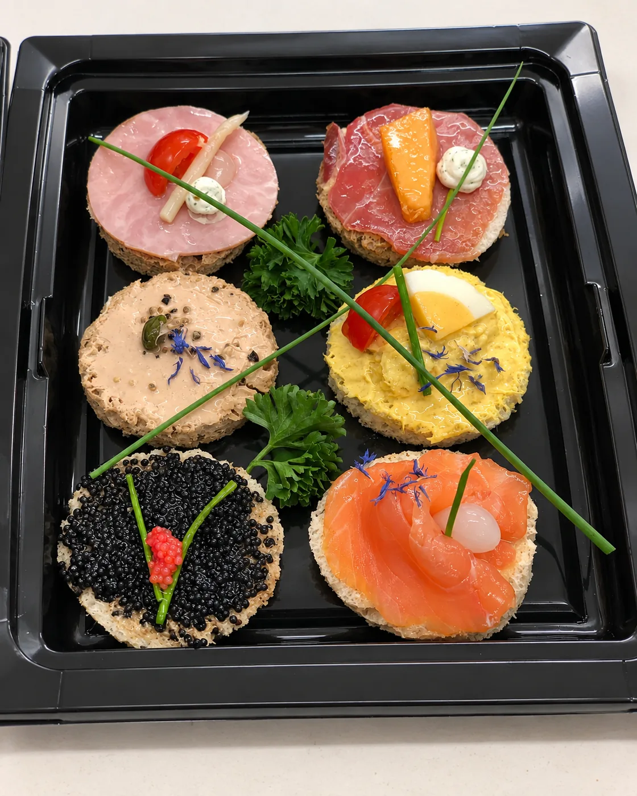
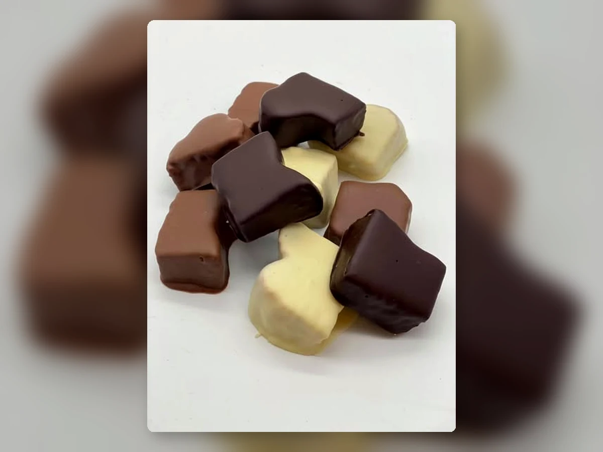
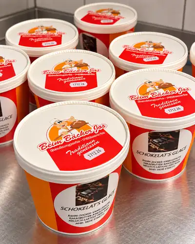
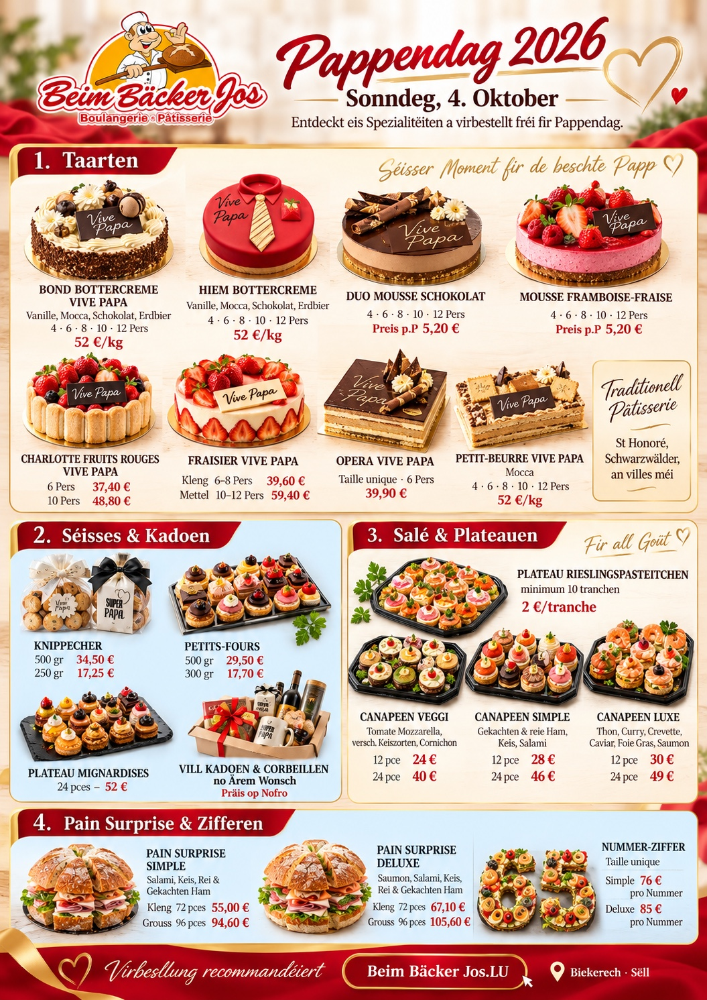

Brout & Baguetten
Klassesch, rustikal a fir den Alldag.
Brout, Viennoiserie, Pâtisserie an Torten – mat Erfahrung, regionale Wuerzelen a Léift fir d’Bäckerhandwierk.
Mir stinn fir eng Bäckerei, bei där Qualitéit, Perséinlechkeet an d’Freed um Produkt am Mëttelpunkt stinn. Vum deegleche Brout bis zur Torte fir e spezielle Moment: eis Clientë sollen ëmmer e Grond hunn, gär zeréckzekommen.

Klassiker fir all Dag, séiss Momenter, salzeg Pausen an individuell Bestellungen – eng Bäckerei soll méi sinn ewéi nëmme Brout.

Klassesch, rustikal a fir den Alldag.

Croissants, Mëtschen a séiss Klassiker.

Fir kleng Freed a grouss Momenter.

Fir eng séier a gutt Paus.

Handwierklech Klassiker a saisonal Spezialitéiten.

Eng séiss Belounung fir zwëschenduerch.
Ob Gebuertsdag, Familljefest, Pappendag oder e ganz perséinlechen Ulass – eis Taarte ginn an eiser Backstuff frësch hiergestallt a mat vill Léift zum Detail dekoréiert. Vu fruuchtege Kreatiounen iwwer Schockela bis bei individuell Motiver a perséinlech Schrëftzich ass villes méiglech. All Taart gëtt passend zum Ulass gestalt. Fir speziell Wënsch recommandéiere mir eng rechtzäiteg Virbestellung.
Eng schéin Unerkennung fir d’Handwierk an d’Aarbecht hannert engem saisonale Lëtzebuerger Klassiker.
Wiel deen Standuert, deen am beschte passt. Mat engem Klick kanns du uruffen oder d’Route direkt opmaachen.
Keng anonym Hotline: bestell direkt do, wou d’Equipe dech och empfänkt.
Vum Kaffi moies bis zur individueller Torte fir e wichtegen Dag.
Biekerech a Sëll – kuerz Weeër, regional Verankerung a lokal Clienten.
Jo. Fir Torten a Bestellunge fir speziell Geleeënheeten ruff w.e.g. fréi genuch zu Biekerech oder Sëll un, fir d’Detailer ofzeschwätzen.
Jo. Eis Produkter kënnen an de Standuerter matgeholl ginn.
Zu Biekerech an der Huewelerstrooss 37 an zu Sëll an der Haaptstrooss 14A.
Am séiersten geet et per Telefon direkt beim Standuert. D’Nummeren an d’Route fënns du hei op der Säit.

Ausgewielte Brout-Spezialitéiten aus eiser Backstuff.
Ausgewählte Arbeiten aus unserer Backstube.
Charakteristesch Spezialitéiten aus eiser Backstuff.
Süße Klassiker und saisonale Spezialitäten aus unserer Backstube.
Frisch vorbereitet und übersichtlich nach Bereich sortiert.
Vun der Produktioun bis an d’Verpakung: en Abléck an eis Aarbecht.